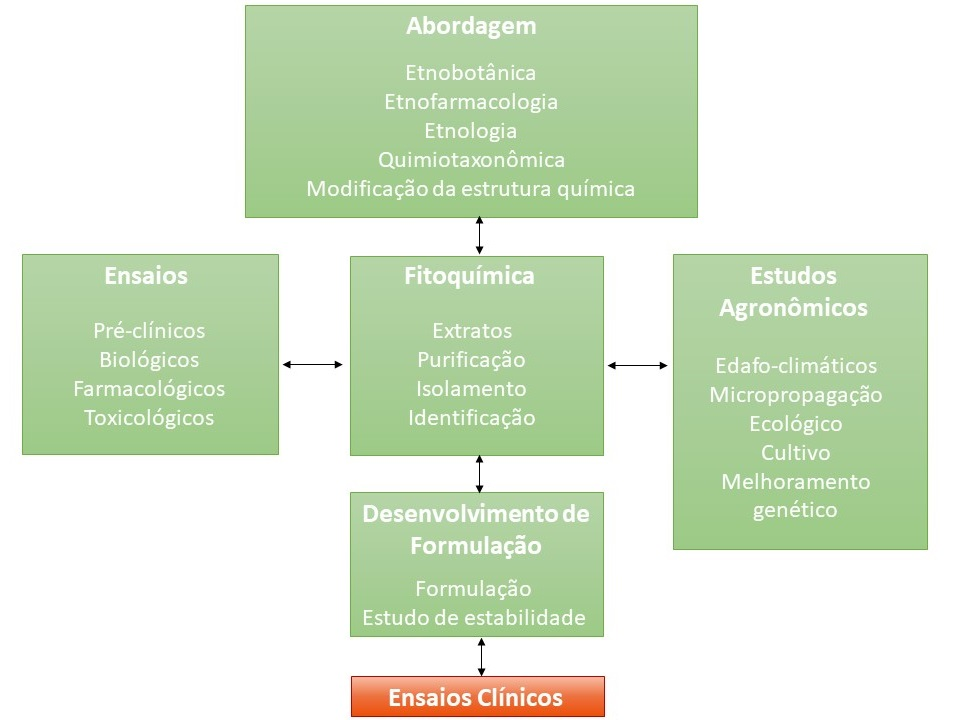

Uma vez comprovado o efeito farmacológico e a ausência de efeitos colaterais e/ou tóxicos o medicamento em experimentação passa para a fase dos ensaios clínicos.
-
 Os ensaios clínicos envolvem a pesquisa conduzida em
seres humanos com o objetivo de descobrir ou confirmar os
efeitos clínicos, farmacológicos e identificar qualquer evento adverso, bem como estudar como o medicamento em experimentação é
absorvido, distribuído, metabolizado e excretado a fim de
verificar sua segurança e eficácia. Por exemplo, pesquisa
realizada em humanos para confirmar os efeitos analgésico do
ácido acetilsalicílico na forma de comprimidos (BRASIL,
2015).
Os ensaios clínicos envolvem a pesquisa conduzida em
seres humanos com o objetivo de descobrir ou confirmar os
efeitos clínicos, farmacológicos e identificar qualquer evento adverso, bem como estudar como o medicamento em experimentação é
absorvido, distribuído, metabolizado e excretado a fim de
verificar sua segurança e eficácia. Por exemplo, pesquisa
realizada em humanos para confirmar os efeitos analgésico do
ácido acetilsalicílico na forma de comprimidos (BRASIL,
2015).
Quando conduzimos um ensaio clínico com um medicamento,
dividimos o processo em quatro fases, somente depois de
concluídas todas as fases, o medicamento poderá ser liberado
para comercialização e disponibilizado para uso da população.
Cada fase possui um objetivo, mas o importante é que a segurança e eficácia devem estar sempre presentes. Vamos conhecê-las?
| ENSAIO | OBJETIVOS | TAMANHO DA AMOSTRA |
|---|---|---|
| Pré-clínico |
|
Variável |
| Clínico Fase I |
|
10 – 30 voluntários sadios |
| Clínico Fase II |
|
70 – 100 pacientes |
| Clínico Fase III |
|
100 – 1.000 pacientes Estudo randomizado |
| Clínico Fase IV |
|
Após aprovação da comercialização do medicamento Farmacovigilância |
Fonte: Adaptado de GONÇALVES (2015).
No Brasil a realização de ensaios clínicos com medicamentos é regulamentada pela RDC no 9, de 20 de fevereiro de 2015.
Importante ressaltar que existem códigos de ética em experimentação animal e humana e que são regulados pelos respectivos conselhos:
O Conselho Nacional de Controle de Experimentação Animal (CONCEA) normatiza o uso de animais em ensino ou pesquisa científica, principalmente, no que concerne ao controle das instituições que criam, mantêm ou utilizam animais para ensino ou pesquisa científica no País.
O Comissão Nacional de Ética em Pesquisa (CONEP) implementa as normas e diretrizes regulamentadoras de pesquisa envolvendo seres humanos, aprovados pelo Conselho Nacional de Saúde.
Qualquer efeito não intencional de um produto farmacêutico que ocorra em doses normalmente utilizadas em humanos relacionado com as propriedades farmacológicas do fármaco.
Qualquer ocorrência médica adversa em um paciente ou participante do ensaio clínico a quem um produto farmacêutico foi administrado e que não necessariamente tenha uma relação causal ao tratamento. Como resultado, um efeito adverso pode ser qualquer sinal, sintoma, ou doença desfavorável e não intencional associada com o uso de um produto sob investigação quer seja relacionada a ele ou não. Ex.: tontura no caso do uso de Valeriana officinalis L.
É qualquer ocorrência médica adversa em um paciente ou participante do ensaio clínico a quem um produto farmacêutico foi administrado e que não necessariamente tenha uma relação causal ao tratamento. Como resultado, um efeito adverso pode ser qualquer sinal, sintoma, ou doença desfavorável e não intencional associada com o uso de um produto sob investigação quer seja relacionada a ele ou não. Ex.: tontura no caso do uso de Valeriana officinalis L.